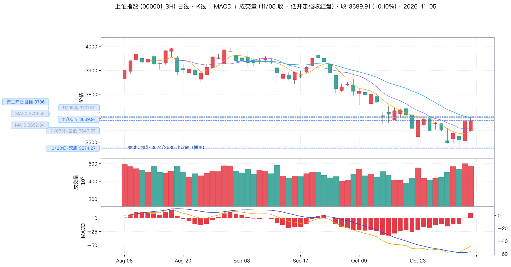
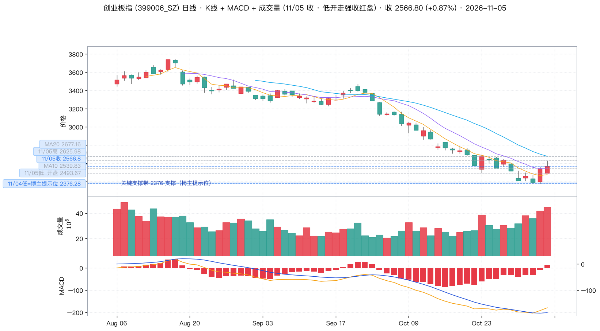
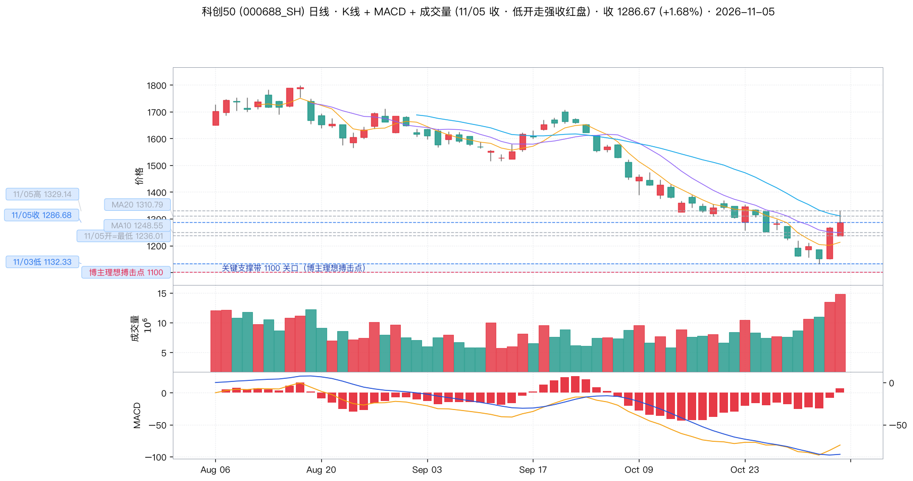
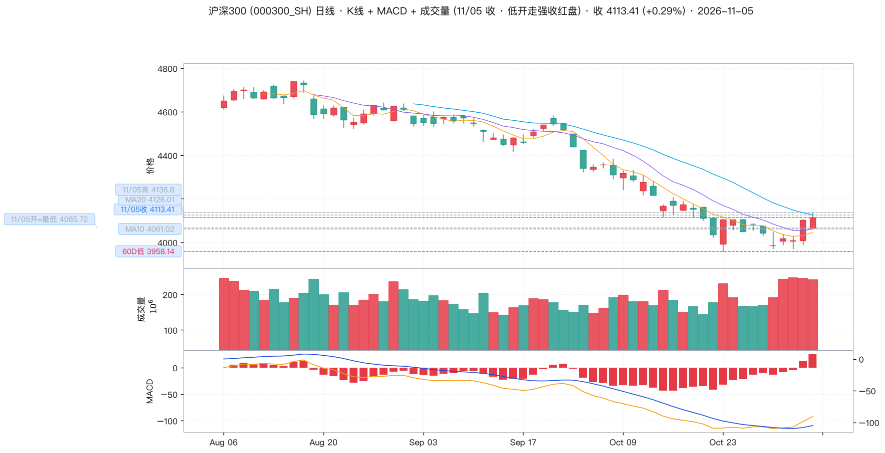
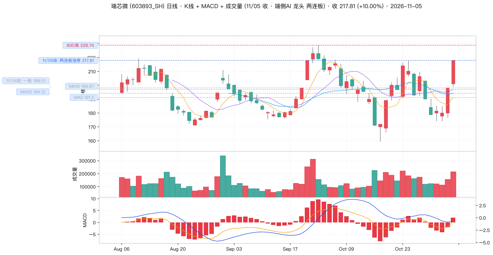
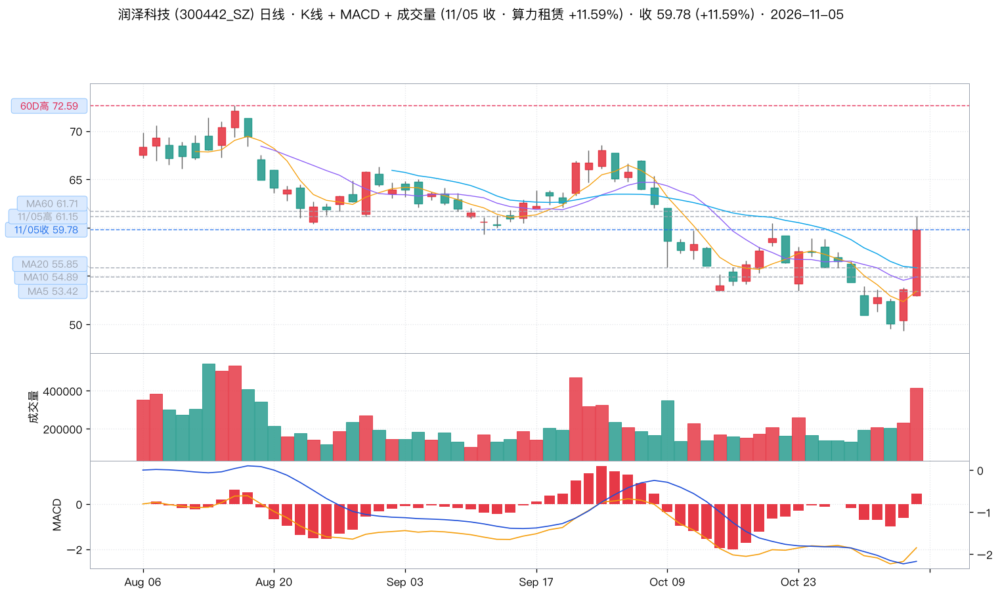
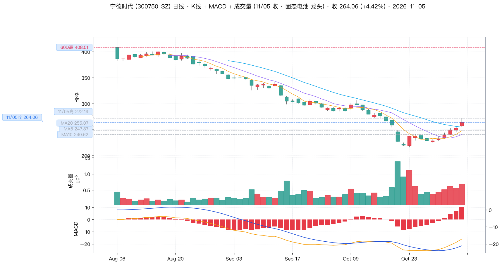
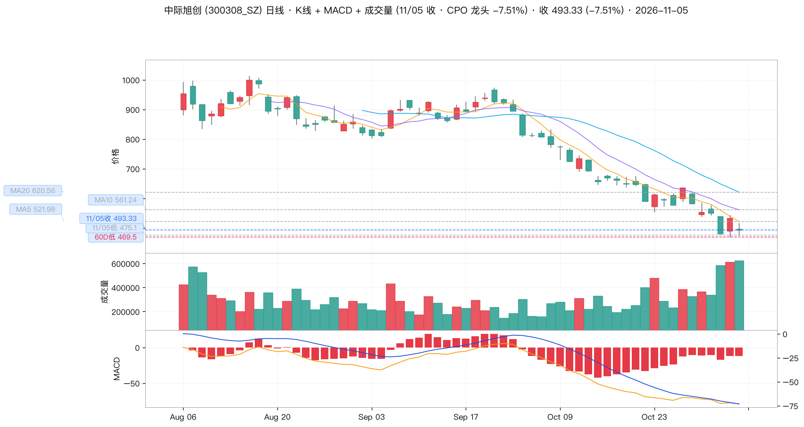

🟡 博主全天维持看多：「低开不惧，轻仓可吸」（09:30，1.46 万赞）→「构筑波段的步骤不变」（15:08，1.59 万赞，当日最高互动）。方向判对了，但幅度只有 +0.10%，增量从 3368 亿骤降到 832 亿 —— 指数在涨，动能在退。并在 22:53 补刀：美股开盘后科技股大幅下杀，纳指大跌 728 点。
11/05 是典型的「低开高走收红、但赚不到钱」的一天。沪指低开 3646.57（开盘价即全天最低，-1.07%）→ 收 3689.91（+0.10%），全天振幅仅 55 点（1.49%）。博主的三个判断全部方向正确：低开不惧 ✅、CPO/存储压创板 ✅、端侧龙头两连板 ✅；但他昨天给的明日目标 3706 今日最高只到 3701.59，差 4.41 点（0.12%）没够着。
真正值得警惕的不是这 4.41 点，而是量能：全市场成交 21351 亿，增量只有 +832 亿（前一交易日是 +3368 亿，萎缩到 1/4）；涨停家数从 372 家断崖到 132 家（-64%）。指数微涨 + 增量骤降 = 反弹动能正在衰减，而不是新一轮上攻的起点。
博主 09:30 写「低开不惧，轻仓可吸……支持的点赞！」（👍14546 💬575 🔁97，当日第二高）；到 13:54 又写「反弹行情是一个过程，不是一两天！」（👍11482 💬1129）。中间隔了 4 个半小时，指数涨幅从最高 +0.42% 收敛到 +0.10%。
这不是矛盾，而是对同一笔交易的事后修正：早盘喊的是「现在买」，下午承认的是「别指望今天结束」。博主自己的话已经把「今日不涨、反弹要拖长」说清楚了 —— 跟随时应取他的点位，不要取他的节奏。
博主在发稿前 7 分钟（22:53:45）补了一条：「美国市场开盘之后科技股纷纷大幅下杀，目前纳指大跌728点！」（👍1282 💬268）。这一条把当天所有的操作建议都重新校准了一遍。
① 与他今早的判断正好相反：06:41 早安帖说「昨晚美国市场是软科技大涨、存储芯片板块大跌」；22:53 说「今晚科技股纷纷大幅下杀」。一夜之间，外盘对 A 股科技线的指引从「软强存储弱」反转成「科技全线被杀」 —— 这不是延续，是反转。
② 11/06 A 股大概率低开，而且跌的正是他今天推荐的两条线：端侧 AI + 算力租赁（瑞芯微两连板、润泽科技 +11.59%）本质上是美股科技股的映射，纳指 -728 点环境下属于重灾区。
③ 但他今天两次喊「轻仓 / 用自有空闲资金」是对的：09:30「轻仓可吸」、14:41「不要用赌博的方式！而且一定要用自有空闲的资金！」、14:36「守股要比守着寡难！」—— 在 22:53 这条面前，这三条风控帖的价值高于任何一条板块推荐。唯一需要被打问号的是 13:54「反弹行情是一个过程，不是一两天」：如果 11/06 低开，「过程」有可能变成「中断」。
| 时间 | 方向 | 原文 / 摘要 | 点赞 | 类型 |
|---|---|---|---|---|
| 11/05 22:53 |
🔴 | 「美国市场开盘之后科技股纷纷大幅下杀，目前纳指大跌728点！」 |
1282 | 外盘风险 |
| 11/05 18:07 |
⚪ | 「#2027放假安排公布#春节：2月5日（除夕、周五）至13日（正月初八、周六）放假调休，共9天。」 | 4349 | 生活 |
| 11/05 17:47 |
⚪ | 「春节9天！」 | 3874 | 生活 |
| 11/05 17:33 |
⚪ | 「#2027放假安排公布#大家好好看看！」 | 3548 | 生活 |
| 11/05 15:08 |
🟢 | 「在外围大跌的情况下，今天两市均能低开震荡走强收红盘，说明aA市场构筑波段的步骤不变……收到请回复666或者点赞支持一下！」 |
15911 | 收盘总结 |
| 11/05 15:02 |
🟢 | 「今天端侧非常"标土浮"……龙头连续拉了2个板，几只改写新高！」 |
8073 | 行业板块点位 |
| 11/05 14:50 |
⚪ | 「我怀疑主力看到这条微博了！」 | 7979 | 互动 |
| 11/05 14:41 |
⚪ | 「来股市要以投资理财的角度考虑，不要用赌博的方式！而且一定要用自有空闲的资金！明白888」 | 9153 | 风控 |
| 11/05 14:36 |
⚪ | 「守股要比守着寡难！」 | 8377 | 金句 |
| 11/05 14:27 |
⚪ | 「其实，秘诀都在里面！」 | 5157 | 互动 |
| 11/05 14:19 |
🟡 | 「今天主要是CPO和存储芯片压创板指数，如果这两个权重板块尾盘有资金自救的话，指数有望收高！」 |
7507 | 大盘判断板块警示 |
| 11/05 13:54 |
🟡 | 「反弹行情是一个过程，不是一两天！明白666」 |
11567 | 操作建议 |
| 11/05 13:35 |
🟡 | 「人形机器人龙头这波反弹明显比大盘指数要提前，也强很多。」 |
8636 | 行业板块 |
| 11/05 11:07 |
⚪ | 「港股企鹅大涨6.5%！」 | 6646 | 外盘 |
| 11/05 10:19 |
🟢 | 「端侧龙头两连板，算力租凭龙二冲板。固态整体表现出色！」 |
10004 | 行业板块 |
| 11/05 10:02 |
🟢 | 「固态、端侧、算力租凭……目前继续领先！」 |
9352 | 行业板块 |
| 11/05 09:30 |
🟢 | 「低开不惧，轻仓可吸……支持的点赞！」 |
14559 | 操作建议 |
| 11/05 06:41 |
🟡 | 「昨晚美国市场是软科技大涨、存储芯片板块大跌，分化非常大！」 |
10302 | 外盘速报 |
| 11/04 13:50 |
🟡 | 「创业板指数己经返涨4% 了……不啵一口？」 | 12199 | 大盘判断 |
| 标的 | 关键位 | 博主原话 / 含义 | 11/05 实际验证 |
|---|---|---|---|
| 上证指数 | 3706 | 11/04 15:08「明天收复3706点后…」 | ❌ 今日最高 3701.59，差 4.41 点（0.12%）未收复。而 MA20 恰在 3701.53 —— 博主的 3706 与 MA20 几乎重合，3700-3706 这道关口连续两日都没站上去。 |
| 3574 / 3580 | 「以3574和3580形成小双底反击之势」 | ❌ 今日最低 3646.57，根本没有回踩双底（距 3580 还有 66 点）。博主的两段式剧本今天两段都没走：前半句「收复 3706」没实现，后半句「回踩双底」自然也没发生。 | |
| 3646 | 11/05 实际开盘＝全天最低 | 博主 09:30「低开不惧」中的「低开」就落在这里。开盘价＝全天最低价，说明低开之后买盘是在开盘瞬间就承接住的，全天没有二次下探。 | |
| 4256 / 4380 | 「参考大盘4256和创业板4380区域撤离的投资者，可以继续分批布局接回来」 | 接回区间仍在 4256（沪指）/ 4380（创业板），远高于今日 3689.91 / 2566.80。博主给的是「更早、更低」的接回位，不是让今天追高。 | |
| 创业板指 | 2493.67 | 11/05 实际最低（开盘价） | ✅ 博主 14:19「尾盘资金自救，指数有望收高」—— 自低点 +2.93% 收于 2566.80，盘中最高自低点 +5.31%（2625.98），收高兑现。 |
| 2539.83 | MA10 | 今日收盘 2566.80 站上 MA10（+26.97 点），但 MA20 2677.16 未过（差 110.36 点）。MACD 柱 -7.345 → +14.833 由绿转红。 | |
| 2376 | 「创业板指数2376点」提示位 | 11/04 最低 2376.28（该位已连续两日被精准触及），今日最低 2493.67 —— 第三日站在 2376 之上，支撑有效。 | |
| 4380 | 「创业板4380点后我提示三川顶」 | 历史撤离位，距今 -41.4%，本轮反弹远未回到该区域 | |
| 科创 50 | 1100 | 10/23 帖「预计要到1100关口附近才是最理想的搏击点」 | ⚠️ 连续第 2 个交易日跳过 —— 今日最低 1236.01，距 1100 还差 12.3%，就已在 +1.68% 的反弹中。 |
| 1236.01 | 11/05 实际最低（开盘价） | 低开即最低，随后全天单边上行，最高 1329.14（自低点 +7.53%），是四大指数中日内形态最强的一个。 | |
| 1310.79 | MA20 | 收盘 1286.68 未收复 MA20（差 24.12 点），距 60 日高 1798.78 仍有 -28.5%。MACD 柱 -7.171 → +7.783 转正。 | |
| 1132.33 | 11/03 最低（博主「到过1132点」） | ✅ 该位仍是本轮反弹的起涨点，自 1132.33 至今 +13.6%，未跌回 | |
| 沪深 300 | 4126.01 | MA20 | 收盘 4113.41 未收复 MA20（差 12.60 点）。当日 +0.29%，明显弱于成长股（创业板 +0.87%、科创50 +1.68%） → 仍是结构性反弹，不是全面反转。 |
| 3958.14 | 60 日低 | 距今日收盘仅 -3.77% —— 权重股已贴近 60 日低位，意味着 10 月那套「四大行 + 两桶油提肩带」护盘结构几乎已被打光：权重既没有继续下杀的空间，也腾不出资金来接成长股的回撤。 |

蓝线＝博主点位（3706 昨日目标 / 3689.91 今收 / 3574 双底）；灰线＝均线（MA10 3659.04 / MA20 3701.53）；浅蓝带＝3574-3580 双底支撑带。开盘价＝全天最低 3646.57，全天振幅仅 55 点（1.49%）。

蓝线＝博主点位（2566.80 今收 / 2376 提示位）；灰线＝MA10 2539.83 / MA20 2677.16；浅蓝带＝2376 支撑带。自低点 2493.67 拉起 +2.93%，收复 MA10，MACD 柱由 -7.345 转正至 +14.833。

红线＝博主 10/23 自设理想搏击点 1100；蓝线＝1286.68 今收 / 1132.33 上一低点；灰线＝MA10 1248.55 / MA20 1310.79。浅蓝带＝1100-1132 区间。今日最低 1236.01，距 1100 仍差 12.3%。

蓝线＝4113.41 今收；灰线＝MA10 4061.02 / MA20 4126.01；红线＝60 日低 3958.14。收盘未收复 MA20，且当日涨幅为四大指数最小。
博主依据：10:02「固态、端侧、算力租凭……目前继续领先！」（👍9352）＋ 10:19「端侧龙头两连板，算力租凭龙二冲板。」（👍10004）＋ 15:02「今天端侧非常"标土浮"……龙头连续拉了2个板，几只改写新高！」（👍8073）。这是他今天唯一反复强调的板块，且给了三次。
盘面实证：端侧 —— 瑞芯微 603893 +10.00% 涨停（两连板）、博通集成 603068 +9.99% 涨停、炬芯科技 688049 +9.32%、中科蓝讯 688332 +6.42%、乐鑫科技 688018 +5.93%、全志科技 300458 +5.47%、恒玄科技 688608 +5.13%、晶晨股份 688099 +2.88%；算力租赁 —— 润泽科技 300442 +11.59%、首都在线 300846 +9.38%、数据港 603881 +5.16%、光环新网 300383 +4.69%、云赛智联 600602 +3.93%。
为什么值得关注：博主的 06:41 早安帖给了一个可验证的外盘依据 —— 「昨晚美国市场是软科技大涨、存储芯片板块大跌，分化非常大」。外盘软科技强 → A 股端侧强；外盘存储弱 → A 股存储弱，11/05 全天结构与这条完全一致。这不是纯情绪，是有外盘锚的板块轮动，持续性比纯题材股更强。
位置：瑞芯微收 217.81，站上 MA5 191.20 / MA10 196.97 / MA20 194.13 全部均线（距 MA20 +23.68），但距 60 日高 228.74 仍有 -4.8%，是四个标的中位置最高的。润泽科技收 59.78，已站上 MA5/10/20，但 MA60 61.71 就是头顶天花板（今日最高 61.15 恰好触及）。
⚠️ 风险：两连板 + 冲板未封并存，说明资金在高位分歧；博主 13:54「反弹行情是一个过程，不是一两天」正是给这条线的降温提示。20cm 涨停与两连板一律不追。
关键位：瑞芯微 MA10 196.97（跌破=退潮）｜60D 高 228.74 ｜润泽科技 MA60 61.71（天花板）｜60D 高 72.59
博主依据：10:02「固态、端侧、算力租凭……目前继续领先！」＋ 10:19「固态整体表现出色！」—— 固态在博主 11/03 的原话里出现过（「固态电池板块有几只明显是提前见底了，起码是波段性底部！」👍7975），11/05 再度点名，是三条线里唯一有连续性的一条。
盘面实证：赣锋锂业 002460 +6.27%（最高 40.46，成交 29.66 亿）／德尔股份 300473 +5.45%／宁德时代 300750 +4.42%（最高 272.19，成交 184.02 亿）／当升科技 300073 +3.82%／金龙羽 002882 +3.58%／天奈科技 +3.53%／翔丰华 300890 +2.14%／三祥新材 603663 +1.68%／上海洗霸 603200 +1.04%。
为什么值得关注：这是三个板块里唯一有万亿级龙头与真实业绩锚的一条（宁德 184 亿成交、赣锋 30 亿），不是纯情绪票。涨幅虽不如端侧炸裂，但是「提前见底 + 资金流入」型反弹（博主的原话是「资金流入明显，涨幅领先」），并且与算力租赁、端侧同属一条 AI 算力需求的物理侧链，三者共振时弹性最大。
位置：宁德时代收 264.06，站上 MA5 247.87 / MA10 240.62 / MA20 255.07，距 60 日高 408.51 仍有 -35.4% —— 三个板块中位置最低、赔率最厚的一个。赣锋锂业自 10/30 低点 34.96 累涨 +12.5%，量能逐日放大（11/03 14.51 亿 → 11/04 16.70 亿 → 11/05 29.66 亿）。
⚠️ 风险：博主 10/10 曾说过「等固态电池技术成熟之后吧」「永不买电车」—— 他看好的是固态板块的资金与情绪，不等于他自己持有。同时固态的持续性高度依赖技术路线与订单落地，不是短线资金接力型标的。
关键位：宁德时代 MA20 255.07（跌破=板块转弱）｜60D 高 408.51 ｜赣锋锂业 MA5 37.05 / 10/30 低点 34.96
博主依据：13:35「人形机器人龙头这波反弹明显比大盘指数要提前，也强很多。」（👍8636）。
盘面实证（15 只样本）：11/05 均值 +1.56% vs 沪指 +0.10%；11/04 均值 +5.71% vs 沪指 +2.16%。个股 —— 兆威机电 003021 +6.33%（11/04 已涨停 +10.01%）、恒立液压 601100 +4.53%、双环传动 002472 +3.71%、柯力传感 603662 +3.65%、北特科技 603009 +3.60%、绿的谐波 688017 +2.62%、步科股份 688160 +1.74%、长盛轴承 300718 +1.49%、中大力德 002896 +1.35%、五洲新春 603667 +0.97%、三花智控 002050 +0.90%、拓普集团 601689 +0.62%、汇川技术 300124 +0.38%、鸣志电器 603728 -0.53%、江苏雷利 300660 -7.98%。
「提前」如何验证：11/04 沪指还在 +2.16% 的普涨里，机器人样本已均值 +5.71%（兆威机电、绿的谐波当日涨停）；11/05 沪指只剩 +0.10%，机器人仍有 +1.56%。「提前且更强」两个词都成立，而且是在沪指涨得最少的一天验证的，含金量高于 11/04。
⚠️ 风险：这是三个板块里分化最大的一个 —— 15 只样本里 5 只翻绿（江苏雷利 -7.98%、鸣志电器 -0.53%），说明资金在机器人内部换股而非整体加仓。而且机器人是博主的「情绪型」偏好（无指数、无业绩锚），他本人历史上多次在高位提示过这类题材的风险。
关键位：兆威机电 MA5 / MA10（跌破=退潮）｜绿的谐波 288 附近缺口｜三花智控 34.88（11/05 收）
🔴 CPO / 光模块 博主 14:19 点名它们「压创板指数」并押注「尾盘资金自救」—— 指数确实被救回来了，但救回来的不是它们自己：中际旭创 300308 -7.51%（成交 307.80 亿，接近宁德时代的 1.7 倍，收 493.33，逼近 60 日低 469.50）、新易盛 300502 -5.54%、天孚通信 300394 -4.78%、太辰光 300570 -2.06%、光迅科技 002281 -0.96%。
🔴 存储芯片 兆易创新 603986 -3.03%、澜起科技 688008 -2.40%；仅江波龙 301308 +1.24%、德明利 001309 +0.34%、佰维存储 688525 +0.16% 微涨。博主 06:41 早安帖说的「存储芯片板块大跌」，当天在 A 股同样成立。
为什么这条线必须单独列出来：它是全市场成交最重、跌幅最深的一条线 —— 中际旭创 307.80 亿的成交额配上 -7.51% 的跌幅，是典型的放量杀跌。而博主的剧本押的是「它们尾盘自救」。结论：博主 14:19 的判断在指数层面成立，在板块层面证伪 —— 他用端侧的强势修复了创业板的点位，却回避了拖累创业板的那条线本身。跟随时务必分清「指数对」和「板块对」。
博主依据：10:19「端侧龙头两连板」＋ 15:02「龙头连续拉了2个板，几只改写新高」。
盘面实证：11/05 开 200.99 / 高 217.81 / 低 199.01 / 收 217.81（+10.00% 涨停），11/04 已 +10.00% 涨停，两连板完全对应。成交 45.71 亿（前日 29.77 亿），量比 1.36 温和放量 —— 不是缩量板，是有承接的板。MACD 柱 -2.110 → +1.849 由绿转红。
位置与风险：站上 MA5 191.20 / MA10 196.97 / MA20 194.13 全部均线，距 MA20 +23.68；但距 60 日高 228.74 仅 -4.8%，是四个标的中位置最高、获利盘最厚的。两连板之后的第三天是分歧日，不是不涨停就一定跌，但追高的赔率已经很差。
关键位：MA10 196.97（回抽不破才是观察点）｜MA20 194.13 ｜60D 高 228.74 ｜11/04 一板价 198.01

瑞芯微日线：60 根 K 线 + MA5/10/20，MACD 与成交量。左侧虚线标注 11/05 收盘（两连板涨停 217.81）、11/04 一板价 198.01、MA5/MA10/MA20 与 60 日高 228.74。注意 MA20 194.13 已被远远甩在下方，一旦回抽失守即为两连板后的退潮信号。
博主依据：10:02「算力租凭……目前继续领先」＋ 10:19「算力租凭龙二冲板」。
盘面实证：11/05 开 52.98 / 高 61.15 / 低 52.89 / 收 59.78（+11.59%）。成交 24.38 亿（前日 11.87 亿，直接翻倍），量比 1.79。MACD 柱 -0.612 → +0.482 转正。涨是涨了，但最高 61.15 距涨停价 64.28 还差 3.13 点 —— 「冲板未封」，说明高位有真实抛压。
位置与风险：站上 MA5 53.42 / MA10 54.89 / MA20 55.85（距 MA20 +3.93），但MA60 61.71 就在头顶仅 0.92% 处，今日最高 61.15 已精确触及即受阻 —— 这是最直接的上方压力。距 60 日高 72.59 仍有 -17.7%，空间比瑞芯微厚。若明日 MA60 61.71 过不去，量比 1.79 的放量就是出货量而非突破量。
关键位：MA60 61.71（天花板）｜今日高 61.15（已触及即受阻）｜MA20 55.85 ｜60D 高 72.59

润泽科技日线：60 根 K 线 + MA5/10/20，MACD 与成交量。左侧虚线标注 11/05 收盘 59.78、当日高 61.15、MA60 61.71（头顶仅 0.92%）、MA5/MA10/MA20 与 60 日高 72.59。当日以最高价 61.15 精准试探 MA60 后回落收 59.78，是「冲板未封」的图形证据。
博主依据：10:02「固态、端侧、算力租凭……目前继续领先」＋ 10:19「固态整体表现出色」。
盘面实证：11/05 开 257.40 / 高 272.19 / 低 255.93 / 收 264.06（+4.42%）。成交 184.02 亿（前日 141.41 亿），量比 1.23。MACD 柱 7.073 → +10.18 继续走强。赣锋锂业 +6.27%、德尔股份 +5.45%、当升科技 +3.82% 同向。
为什么它是三支里最「可跟」的：① 位置最低 —— 距 60 日高 408.51 仍有 -35.4%，而瑞芯微只剩 -4.8%；② 涨幅最温和 —— +4.42% 没有透支短线情绪；③ 有真实成交与业绩锚，184 亿的成交是资金真金白银的定价，不是小市值情绪票；④ 站上 MA5/MA10/MA20 全部均线（距 MA20 +8.99），技术上是「刚刚转强」而不是「已经过热」。
⚠️ 风险：博主本人 10/10 说过「等固态电池技术成熟之后吧」「永不买电车」—— 他看板块的资金，不等于他自己持有；同时宁德距 MA60 317.79 仍有 -16.9%，属中期修复而非突破。
关键位：MA20 255.07（跌破=转弱）｜今日高 272.19 ｜MA60 317.79 ｜60D 高 408.51

宁德时代日线：60 根 K 线 + MA5/10/20，MACD 与成交量。左侧虚线标注 11/05 收盘 264.06、当日高 272.19、MA5 247.87 / MA10 240.62 / MA20 255.07 与 60 日高 408.51。收盘刚好站在 MA20 255.07 之上，是三支个股里形态最健康的一支（距 60 日高仍有 -35.4% 空间）。
博主依据：14:19「今天主要是CPO和存储芯片压创板指数，如果这两个权重板块尾盘有资金自救的话，指数有望收高！」—— 他把 CPO/存储视为拖累项，并押注它们尾盘自救。
盘面实证：11/05 开 497.00 / 高 516.17 / 低 475.10 / 收 493.33（-7.51%），成交 307.80 亿（占全市场 21351 亿的 1.4%，是宁德时代的 1.7 倍）。MACD 柱 -11.306 → -11.475 继续走扩，零轴下方绿柱。MA5 521.98 / MA10 561.24 / MA20 620.56 三线全在头顶压制，距 MA20 差 -127.23（-20.5%）。距 60 日低 469.50 仅 +5.07%。
这是本报告最重要的一张图：它同时说明两件事 —— ① 博主的「尾盘自救」在指数层面兑现、在板块层面证伪（创业板被端侧救回来了，CPO 自己却收在全天低位区）；② 307.80 亿的成交配 -7.51% 的跌幅是放量杀跌，说明有规模资金在离场，而不是散户恐慌。这两点合起来意味着：创业板的强势是「换血」式的，不是「合力」式的。
关键位：60D 低 469.50（跌破则拖累创业板二次探底）｜今日低 475.10 ｜MA5 521.98 ｜MA20 620.56

中际旭创日线：60 根 K 线 + MA5/10/20，MACD 与成交量。左侧虚线标注 11/05 收盘 493.33（-7.51%）、当日低 475.10、60 日低 469.50，以及 MA5 521.98 / MA10 561.24 / MA20 620.56。价格被三条均线全线压制在头顶，MACD 绿柱在零轴下方继续走扩，是本报告最典型的风险端图形。
博主 22:53 报纳指大跌 728 点、科技股大幅下杀。这意味着11/06 的前提已经从「反弹第二天」变成「低开应对」，操作节奏要整体后移：
一句话总结：博主今天说对了方向、说错了幅度。他的剧本是「低开 → 筑波段 → 走成过程」，而盘面是「低开 → 微涨 → 缩量磨」。取他的点位，不取他的节奏；取固态和算力的位置，不取端侧的涨幅。
加上 22:53 的纳指 -728 点：明天的正确姿势是「不接低开、只等 10 点后、优先固态、端侧降级为不参与」。他今天自己写的三句话——「轻仓可吸」「不要用赌博的方式！而且一定要用自有空闲的资金」「守股要比守着寡难」——才是这份报告里对明天最有用的一部分。
11/04 15:08 他写「明天收复 3706 点后以 3574 和 3580 形成小双底反击之势」。11/05：前半句「收复 3706」差 4.41 点没实现；后半句「回踩双底」因为最低只到 3646.57（离 3580 还有 66 点）而根本没触发。连续两日，剧本的关键条件一个都没满足。这说明他的点位体系不是自动兑现的剧本，而是需要市场配合的条件 —— 条件不成立时，跟单的人承担的是全部的时间成本。
博主全天喊得最响的是 09:30（1.45 万赞）和 15:08（1.57 万赞）。但 09:30 之后的实际走势是：沪指从开盘 3646.57 到收盘 3689.91，全天最高只到 3701.59（+0.42%）。而他自己在 15:08 说「在外围大跌的情况下」—— 他明知道外盘在跌，却让读者在 A 股低开时进场。赚 1.17% 的钱，担一晚上的外围风险敞口，赔率并不好。他 14:41「不要用赌博的方式！而且一定要用自有空闲的资金」才是更该被记住的那句。
「反弹行情是一个过程，不是一两天！」出现在指数从 +0.42% 收敛到 +0.10% 之后。博主的行为模式高度稳定：低位喊买入、冲高后改口降温。11/04 是「是不是很害怕？」→「一阳改三观！」，11/05 是「轻仓可吸」→「不是一两天」。方向判断在低位时最有用，在高位时最容易被情绪修正 —— 所以要把他的点位和立场分开取用。
博主 14:19 押注「CPO 和存储芯片尾盘资金自救，指数有望收高」。结果：创业板确实收高 +0.87%，但中际旭创 -7.51%（307.80 亿放量杀跌）、新易盛 -5.54%、兆易创新 -3.03%。真正把创业板救回来的是端侧和算力租赁。一个指数的强势如果建立在「拖累它的板块继续流血」之上，这种强势的持续性就要打问号。盯住中际旭创 469.50，比盯沪指 3706 更能提前发现风险。
10/23 帖：「预计要到 1100 关口附近才是最理想的搏击点」（科创50）。11/04 最低 1149.10 就已反弹 +9.92%，11/05 最低 1236.01（距 1100 还差 12.3%）仍在反弹。博主自己定的「最理想买点」连续两天都没等到，而反弹已经开始。这不是他判断错 —— 恰恰说明他比市场更谨慎。对跟单者的含义是：不要因为博主喊买就跟，因为你等的那个价位可能永远等不到，而你要在更贵的地方接他的盘。
22:53 博主报纳指大跌 728 点、科技股纷纷大幅下杀。结合今天盘面：端侧 AI 与算力租赁正是美股软科技的 A 股映射（博主 06:41 自己就写过「昨晚美国市场是软科技大涨、存储芯片板块大跌，分化非常大」，当天 A 股端侧涨、存储跌，结构一一对应）。外盘映射规律今天成立，就意味着今晚的杀跌大概率同样映射到 11/06 的端侧与算力租赁。而今天恰好也是这两条线涨幅最大、位置最高、获利盘最厚的一天（瑞芯微距 60D 高仅 -4.8%，润泽量比 1.79 冲板未封）。今天最强的那条线，明天最可能是最先挨打的那条线。唯一需要记住的例外是固态电池（宁德时代）：它靠的是产业逻辑而非美股映射，且距 60D 高还有 -35.4% 的空间，是隔夜冲击里相对最经打的一个。
① 抓取窗口 —— m.weibo.cn 对未登录访客只开放时间线第一页（10 条），本期的完整覆盖是通过「时间线 + 搜索接口多查询词采集」补齐的，窗口为 11/04 13:50 → 11/05 18:07 共 18 条（17 条属 11/05）。18:07 之后至发稿（23:00）博主确无新帖（时间线第一页已确认）。
② 美股数据未独立核验 —— 博主 06:41「昨晚美国市场是软科技大涨、存储芯片板块大跌」为博主自述；本报告的 Tushare 账号无美股指数权限，故该条只能通过 A 股当日结构（端侧强 / 存储弱）反向印证，未直接核实美股收盘数字。